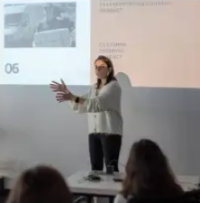

Buraxılış layihəsi “Code Academy”dəki təhsilin yekun layihəsi hesab olunur və çox önəmli rol oynayır. Təqdimat təhsil boyunca keçirilən bütün mövzuları özündə cəmləyir. Buraxılış layihəsi tədrisi
ƏtraflıHər hansı bir peşəni yaxşı bacarmaq üçün yalnız öyrənmək kifayət deyil, gərək öyrəndiklərinizi tətbiq edə bilmə bacarığına da yiyələnib təcrübə toplayasınız. Buna görə Code Academy-nin
ƏtraflıTapşırıqlar, mini layihələr müəllim tərəfindən yoxlanılması sizin bilik və bacarıqlarının hansı dərəcədə olduğunu və həm tədris müddətində, həm də məzun olduqdan sonra hansı sahələri daha
ƏtraflıMentor Sistemi Code Academy-də tələbələrin təhsildə öyrəndiklərini təkrar etmələrini və gücləndirmələrini təmin edən xüsusi bir sistemdir.
Ətraflı